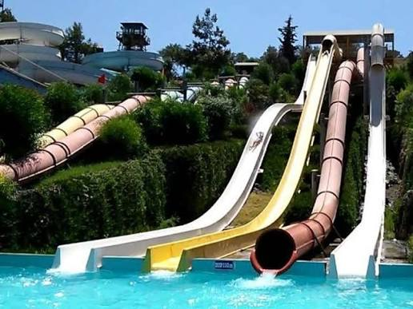
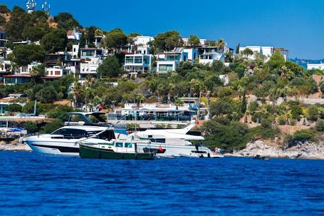

POPULARTüplü Dalış Deneyimi
Genel Bakış
Bodrum'un berrak suları ve yumuşak su altı arazisi, onu Türkiye'de ilk kez dalış denemek için en popüler yerlerden biri yapar - sertifikalı dalıcılar için de ödüllendirici bir noktadır. İlk kez dalanlar 'deneme dalışı' tarzı bir seansa katılır: karada kısa bir brifing, ardından bir eğitmenin sürekli yanınızda olduğu, tamamen gözetim altında sığ bir dalış.
Sertifikalı dalıcılar, resif canlılarının bulunduğu daha derin noktalara rehberli dalışa katılabilir; koşullara bağlı olarak ahtapot, deniz yılanı balığı ve mercan balığı sürüleri görme şansı da vardır. Tüm ekipman sağlanır ve her dalışa lisanslı bir eğitmen eşlik eder.
Öne Çıkanlar
- Deneyim gerektirmeyen, yeni başlayanlara uygun deneme dalışı
- Sertifikalı dalıcılar için rehberli dalış seçeneği
- Lisanslı eğitmenle küçük gruplar
- Tam ekipman sağlanır
- Berrak Ege görüş mesafesi
- Su altı fotoğraf fırsatları
Tur Programı
-
09:00
Otelden Alış
Otelinizden alınıp dalış merkezine transfer edilirsiniz.
-
09:30
Brifing ve Ekipman
Eğitmeninizle güvenlik brifingi ve ekipman ayarlama.
-
10:15
Tekne Transferi
Dalış noktasına kısa bir tekne yolculuğu.
-
10:45
Dalış
Baştan sona tam gözetim altında sığ deneme veya rehberli dalış.
-
12:30
Dönüş
Marinaya tekneyle dönüş ve otelinize transfer.
Fiyata Dahil Olanlar
- Tam dalış ekipmanı (dalış elbisesi, tüp, regülatör, maske, palet)
- Lisanslı eğitmen ve güvenlik brifingi
- Dalış noktasına tekne transferi
- Bir dalış (sertifikanıza göre deneme veya rehberli)
- Otel alış ve bırakış hizmeti
- Şişe suyu ve havlu
Fiyata Dahil Olmayanlar
- PADI veya SSI sertifika kursu (ayrı olarak sunulur)
- Su altı fotoğraf/video paketi (satın alınabilir)
- İkinci dalış eklentisi
- Eğitmen için bahşiş
Önemli Bilgiler
- Buluşma Noktası: Bodrum Marina'daki dalış merkezi
- Kalkış Saati: 08:00
- Dönüş Saati: 17:00
Konum
Bunlar da İlginizi Çekebilir

BEST SELLER